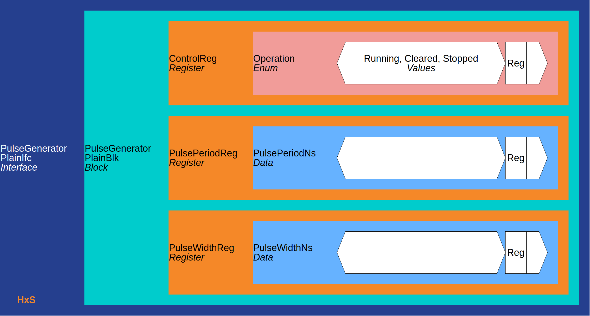

« 1. PacuSc IO Controller :: Contents :: 3. (PulseGeneratorPlainIfc) »
Contents
PulseGeneratorPlainIfc Hw/SW interface overview
 eccelerators.tutorial.PulseGeneratorPlainIfc overview¶
eccelerators.tutorial.PulseGeneratorPlainIfc overview¶